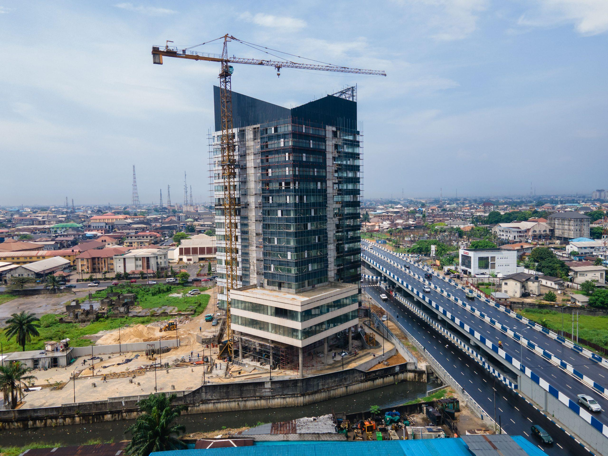
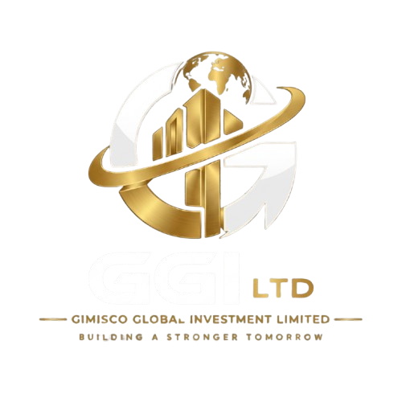
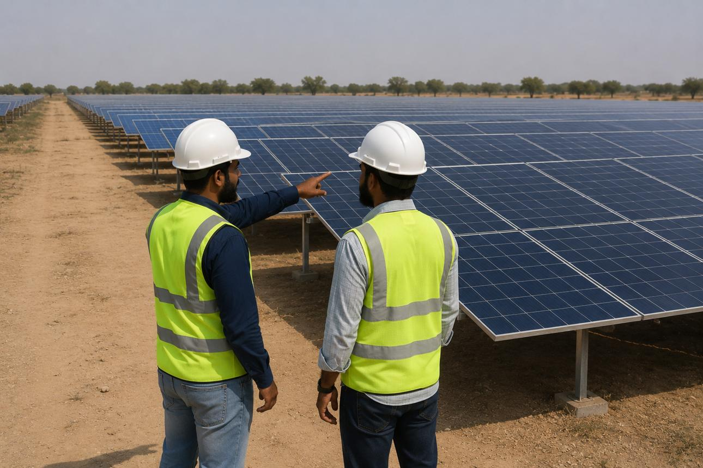
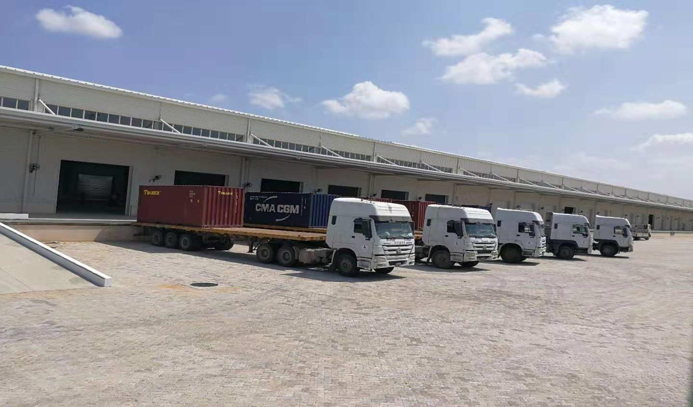
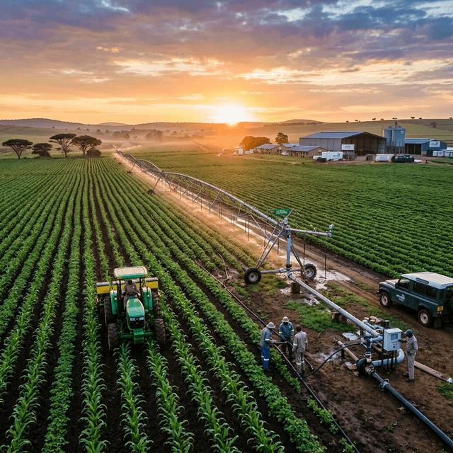

01 / CONSTRUCTION
Construction & Infrastructure
Construction, infrastructure development and project execution solutions.
↗

A focused presentation of GGI's supplied project imagery across key operating areas.

Construction, infrastructure development and project execution solutions.

Energy, electrical and related technical execution solutions.

Procurement, supply, distribution and logistics support.

Agricultural development and food-related investment and execution.
This section is deliberately structured so GGI can add verified project photographs, project descriptions, dates, locations and documents without changing the design system.
Discuss A Project ↗